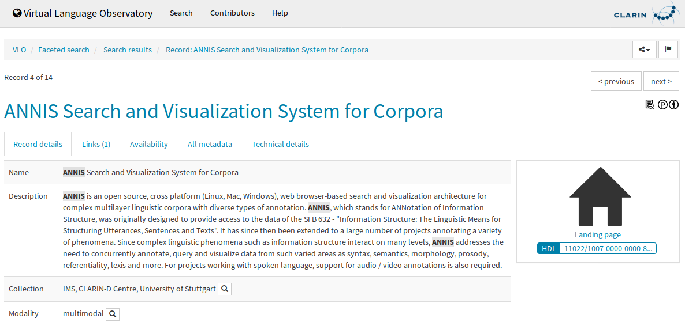
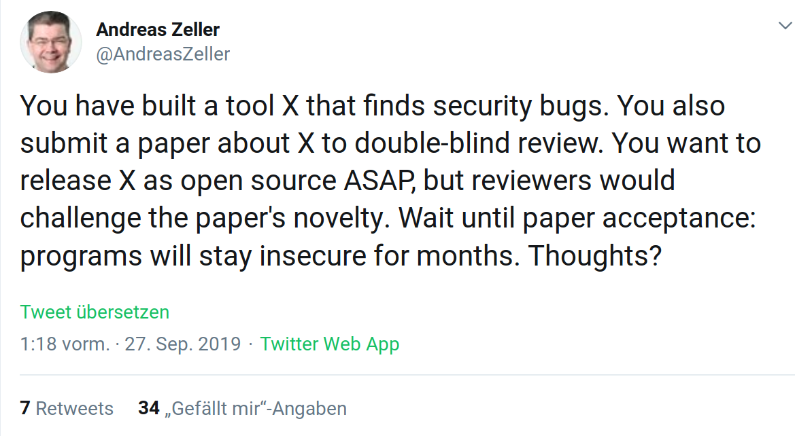
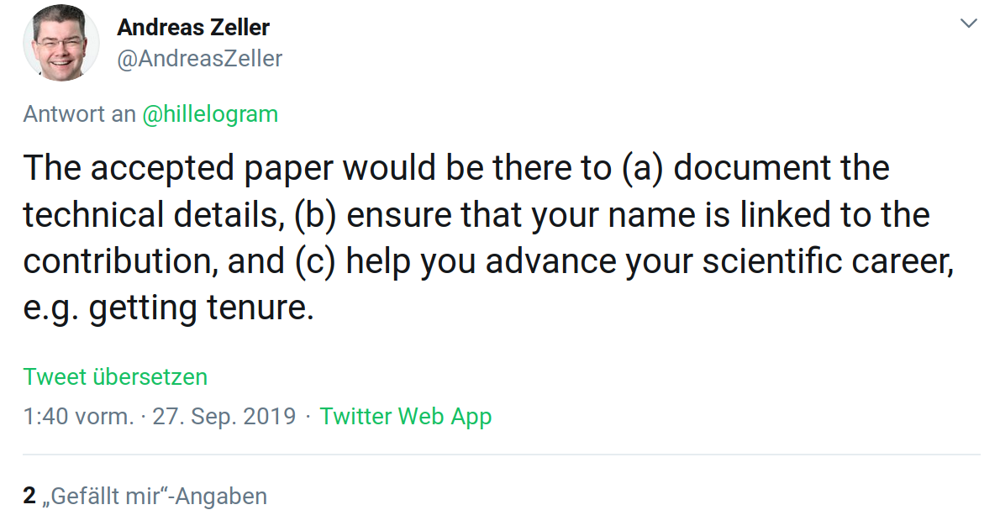

Software-Publikationen:
Überblick, Herausforderungen, Bedarfe
Fachgespräch “Neue digitale Formate für die Forschung”,
Allianz-AG 8 “Wissenschaftspraxis”,
Bonn, Hochschulrektorenkonferenz, 2019-09-30
Stephan Druskat (Deutsches Zentrum für Luft- und Raumfahrt (DLR),
Friedrich-Schiller-Universität Jena, Humboldt-Universität zu Berlin)
Fachspezifika
Linguistik - Formate
- Papers, Monographien (inkl. z.B. Grammatiken & Wörterbücher), Konferenzbeiträge
- Modelle [d]
- Datensätze (v.a. Korpora) aus analogen oder digitalen Quellen [a/d]
- Datenbanken (z.B. Treebanks, typologische Datenbanken) [d]
- Standards (z.B. Tagsets) [a/d]
- Software [d]
- technische Berichte (Annotationshandbücher, etc.) [a/d]
- Digitalisate (z.B. von Handschriften) [d]
allgemein nativ [a]nalog / nativ [d]igital
Linguistik - Wahrnehmung und Nutzung digitaler Formate
- datengetriebene Teilbereiche (z.B. Korpuslinguistik, Computerlinguistik, Phonetik, moderne hist. Linguistik)
- Forschungsdaten sind zentral und werden auch so wahrgenommen
- Forschungssoftware ist zentral, wird aber nur teilweise so wahrgenommen (Computerlinguistik)
Forschungssoftware - Qualitätssicherung
- analog zu Lebenswissenschaften
- softwaretechnische Qualitätssicherung: vs. Praxis (Fähigkeiten, Ressourcen, Anreize)
- wissenschaftliche Qualitätssicherung: nur über Metaformate (Papers)
- Validität sekundärer Qualitätssicherung?
Forschungssoftware - Anerkennung und Gratifikation
Nein
(bzw. kaum, v.a. sekundär via Paper)
Forschungssoftware - infrastrukturelle Unterstützung - Infrastrukturen
z.B. CLARIN (ERIC)
- webbasierte Analysewerkzeuge: Nutzung?
- Virtual Language Observatory (Suchmaschine)
- Datenrepositorien
Distribution (Publikation)? Vernetzung? Auswertung?
VLO

Forschungssoftware - infrastrukturelle Unterstützung - Infrastruktur
- Ausbildung?
- Karrierepfade?
- grundständige Finanzierung?
- softwarespezifische Infrastruktur (VCS, CI, etc.)?
- dedizierte Softwarerepositorien/-archive?
- (disziplinspezifische) Policies / Guidelines?
- zentrale Anlaufstellen?
- nicht-projektgebundene Softwaregruppen?
- informell
- Nein
- kaum
- teilweise
- Nein/Zenodo
- Nein
- de-RSE
- kaum
Entwicklungs-, Steuerungs-, Reformbedarfe bzgl. Software-Publikationen
State of the art

“Will an accepted paper increase the odds that people will use it?”

Publikationen
- “Document the details”
- “Link name to contribution”
- “Help advance careers”
Was ist der Forschungsbeitrag?
- Paper?
- Service?
- Datenoutput?
- Software!
- “Document the details”: Software ist “the details”
- Code ist Dokumentation
- (Softwaredokumentation ist Dokumentation)
- Bedarf\(_1\): Kulturwandel
Attribution
- “Link name to contribution”
- Bedarf\(_2\): Metadaten
- Citation File Format (CFF) (Druskat et al. 2018) - Autorenformat
- CodeMeta (Jones et al. 2017) -
Austauschformat - Steuerungsbedarf: Metadaten fordern
- Entwicklungsbedarf: Metadaten in Publikationsplattformen integrieren
Zitierung
- “Link name to contribution” + “Help advance careers”
- Bedarf\(_3\): Zitierpraxis
- neben allgemeinen - z.B. DFG Kodex 2019 ((DFG) 2019) - spezifische Richtlinien und Policies für Herausgeber*innen, Gutachter*innen, Autor*innen (derzeit entwickelt von FORCE11 SCIWG Guidance Task Force)
- Steuerungsbedarf: Evaluation inkl. Softwareveröffentlichungen
- Softwarezitierung hat zentrale Rolle für Reproduzierbarkeit
- Entwicklungsbedarf: Software muss eigene Referenzen zitieren (eigene Dissertation)
Publikationsplattformen
- Journal of Open Source Software (JOSS) / Software Journals?
- GitHub/GitLab? bzw. Git
- Zenodo
- DOI für Versionen
- DOI für “Konzept”
- Metadaten?
- Peer Review?
- Software Heritage?
Publikationsplattformen
- Bedarf\(_4\): geeignete Publikationsplattformen, Auffindbarkeit
- Entwicklungsbedarf: wiss. Softwarearchiv mit PID, Versionen + Konzepten, (Zitations-)Metadaten; (Bibliotheken? NFDI?)
- Entwicklungsbedarf: Peer Review für Forschungssoftware; neue Rolle für Software Journals ohne Fließtextveröffentlichungen?
Karrierepfade
- “Help advance careers” - Bedarf\(_5\): Karrierepfade
- Research Software Engineers analog zu wiss. Stellenbeschreibungen
- Reformbedarf: Grundlagen der Softwareentwicklung in Curricula
- Reformbedarf: Karrierepfade entwickeln und implementieren
- Steuerungsbedarf: (grundständige) Finanzierung softwarerelevanter Stellen, z.B. Grundsicherung durch Institutionen + Finanzierung durch Drittmittel
- Steuerungsbedarf: Einrichtung institutioneller RSE-Gruppen nach britischem Vorbild (?)
Danke!
Was sind Ihre Fragen?
stephan.druskat@dlr.de
Twitter: @stdruskat
ORCiD 0000-0003-4925-7248
vorstand@de-rse.org
Folien: doi:10.6084/m9.figshare.9918653
Appendix
Referenzen
(DFG), Deutsche Forschungsgemeinschaft. 2019. “Leitlinien zur Sicherung guter wissenschaftlicher Praxis (Kodex) [Guidelines for Safeguarding Good Scientific Practice (Code)],” August, 32 pages. http://bit.ly/dfg-kodex-2019.
Druskat, Stephan, Neil Chue Hong, Robert Haines, and James Baker. 2018. “Citation File Format (CFF) - Specifications,” August. https://doi.org/10.5281/zenodo.1003149.
Jones, Matthew B., Carl Boettiger, Abby Cabunoc Mayes, Arfon Smith, Peter Slaughter, Kyle Niemeyer, Yolanda Gil, et al. 2017. CodeMeta: An Exchange Schema for Software Metadata. Version 2.0. https://doi.org/10.5063/schema/codemeta-2.0.